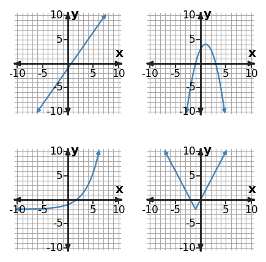

Function Synthesis and Capstone Analysis
Function Analysis, Modeling, and Synthesis
Use structure, representations, and context as evidence—not decoration.
Learning Target
Students will synthesize understanding of function families and representations to solve complex problems.
- I can construct a solution pathway that connects equations, graphs, tables, and contexts across function families.
- I can use multiple representations to solve complex function problems and interpret results.
- I can assess competing solution strategies and choose the representation that best supports the conclusion.
Vocabulary / Key Notation Preview
function family · representation · model · key feature · strategy
Sort the vocabulary. Write each vocabulary word in the column that best matches what you know right now. You may move a word later.
| Know for sure | Recognize | Don't know yet |
|---|---|---|
What's to Come
DO NOT SOLVE IT YET.
Circle anything familiar, underline symbols, labels, conditions, data, or features that seem important, and write short notes about what you think may matter later.
A function-analysis dashboard shows several familiar family graphs. Imagine that a problem asks you to identify the family, estimate a key feature, and make an exact calculation. Decide which representation you would use first for each job and explain how you would check that all representations describe the same relationship.

Let's Get Started
Skim the section. Record what catches your attention before you read closely.
| What I noticed | |
|---|---|
| What I predict | |
| What I wonder |
READ IN SHORT CHUNKS.
Annotate the words and visuals together. Underline evidence, circle or highlight bold vocabulary, label arrows, measurements, or important features, connect sentences to figures, and jot short questions or connections in the margins.
I can construct a solution pathway that connects equations, graphs, tables, and contexts across function families.
Synthesis means choosing and connecting tools rather than performing every procedure you know. Each representation makes some information easy to see. A table gives exact listed input-output pairs, a graph shows overall shape and key features, an equation supports exact calculation and symbolic reasoning, and a context explains what the variables and outputs mean.
An efficient solution pathway starts with the representation that best matches the first question, then moves only when another form adds needed information. If you need an exact output already listed, start with a table. If you need turning behavior or an interval of increase, start with a graph. If you need an exact intercept or long-range calculation, an equation may be the strongest tool.
The pathway also needs consistency checks. Different representations of the same relationship must agree on shared points, key features, and function-family behavior. If a table has constant first differences but the proposed equation is exponential, stop and repair the mismatch before continuing. Connecting representations is partly translation and partly error detection.
- Which representation is usually most direct for reading an exact output that is already listed?
- Which representation is usually strongest for seeing overall shape or turning behavior?
- What should you do if two representations of the same claimed relationship imply different function families?
shape, intervals, turning behavior, approximate features
exact calculation, symbolic structure, parameters
exact sampled values, differences/ratios, listed outputs
meaning, units, constraints, reasonable domain
Example 1: Choose the Best Starting Representation
You need the exact output already listed for a particular input. Which representation—equation, graph, or table—is usually the most direct starting point, and why?
You Try It 1: Choose the Best Starting Representation
You need the overall shape and turning behavior. Which representation—equation, graph, or table—is usually the most direct starting point, and why?
Example 2: Check Representation Consistency
A table has outputs [5, 8, 11, 14] for consecutive integer inputs, while a proposed equation is $y=4(1.2)^x$. Explain the conflict and identify what should be rechecked.
You Try It 2: Check Representation Consistency
A table has outputs [10, 6, 2, -2] for consecutive integer inputs, while a proposed equation is $y=8(0.8)^x$. Explain the conflict and identify what should be rechecked.
I can use multiple representations to solve complex function problems and interpret results.
Using multiple representations does not mean repeating the same work four times. The goal is to use one form to reveal information and another to extend, verify, or interpret it. A table can reveal a constant ratio, which suggests an exponential family; an equation can then express the relationship compactly and predict an unlisted value.
Representations also differ in exactness. A graph may give a quick approximate intercept, while an equation can give an exact one. A real data table may contain measurements that do not lie exactly on a model graph, so the equation can be a useful approximation rather than a perfect identity. Synthesis requires noticing whether the representations are exact translations or a model-and-data comparison.
Interpretation brings the work back to the situation. A computed number is not a finished answer until you identify its units and meaning, check that the input is reasonable, and decide whether the result should be exact or approximate. The strongest solutions move flexibly among representations while preserving one coherent relationship.
- Why might you use both a table and an equation in the same problem instead of choosing only one?
- When can a graph and equation both be correct even if plotted data points do not lie exactly on the model?
- What should be added to a numerical result before it becomes a complete contextual conclusion?
- Use one representation to identify structure.
- Translate the structure into another representation when it adds power.
- Check at least one shared value or feature.
- Interpret the result with units, context, and domain.
Example: constant ratio in a table $\rightarrow$ exponential equation $\rightarrow$ graph check $\rightarrow$ contextual prediction.
Example 3: Translate Table Structure into an Equation
Use the table to choose a function family and write one matching equation.
| $x$ | 0 | 1 | 2 | 3 |
|---|---|---|---|---|
| $y$ | 3 | 6 | 12 | 24 |
You Try It 3: Translate Table Structure into an Equation
Use the table to choose a function family and write one matching equation.
| $x$ | 0 | 1 | 2 | 3 |
|---|---|---|---|---|
| $y$ | 4 | 7 | 10 | 13 |
Example 4: Decide Whether a Model Is Exact or Approximate
A concert venue models attendance by $A(t)=500+60t$ for the first several weeks. A table of actual attendance begins 500, 565, 617, 690. Use both representations to judge whether the linear model is exact or approximate.
You Try It 4: Decide Whether a Model Is Exact or Approximate
A fundraiser models donations by $D(t)=300(1.10)^t$. Actual totals for $t=0,1,2,3$ are 300, 332, 361, and 401 dollars. Use the equation and data to decide whether the model is exact or approximate.
I can assess competing solution strategies and choose the representation that best supports the conclusion.
A strong strategy is chosen because it fits the information needed, not because it is the method you used most recently. Complex function problems often contain several possible paths. One route may be faster for estimating, another may be better for exact calculation, and another may make the final explanation clearer.
Assessing competing strategies means asking what each one reveals and what it hides. A graph is efficient for intervals and shape but may not give exact values. An equation is precise for symbolic calculation but can hide the overall behavior from a quick glance. A table can expose local patterns but may not show what happens between or beyond listed inputs. Context can rule out mathematically possible but unrealistic answers.
The best pathway can also change mid-problem. New evidence may show that an assumed function family was wrong, or a representation may reveal a conflict that another form hid. Expert problem solving includes revision: choose, test, compare, and switch tools when the evidence demands it. A clear explanation should tell not only what worked, but why that representation supported the conclusion.
- Why is “I always start with the equation” not a strong strategy rule?
- What is one important limitation of using only a graph for a problem that asks for exact values?
- What should you do when a new representation reveals a conflict with your current strategy?
Ask: What do I need to know?
Choose: Which representation shows that most directly?
Connect: What second representation can verify or extend the result?
Check: Do shared values, features, and context agree?
Revise: If not, change the model or pathway.
Example 5: Ask for Evidence That Separates Competing Models
Two models fit early data: a linear model adds 120 each period; an exponential model grows 8% each period. What additional evidence would best help choose between them?
You Try It 5: Ask for Evidence That Separates Competing Models
Two models fit the first few values of a membership data set: a linear model adds 120 members each month, while an exponential model grows 5% each month. What later evidence would best help decide which model is more appropriate?
Example 6: Plan an Efficient Multi-Representation Strategy
A problem asks for an interval of increase, an exact intercept, and several outputs. Propose an efficient order for using graph, equation, table, and/or context representations.
You Try It 6: Plan an Efficient Multi-Representation Strategy
A problem asks for an initial value, a multiplicative growth factor, and a prediction 10 time units later. Propose an efficient order for using equation, table, and graph representations.
Summary
- Choose representations by the information needed: graph for behavior, equation for exact symbolic work, table for sampled values/patterns, and context for meaning and constraints.
- Connect representations by translating structure and checking shared points or features.
- Compare solution strategies for efficiency, exactness, interpretability, and fit to the problem; revise when evidence conflicts.
Common Mistakes
| Mistake | Better move |
|---|---|
| Using one representation by habit | Choose the form that best reveals the information the task asks for. |
| Assuming all representations agree | Cross-check shared values and family features before combining conclusions. |
| Treating approximate models as exact | Distinguish observed data from fitted equations and interpret the level of precision appropriately. |